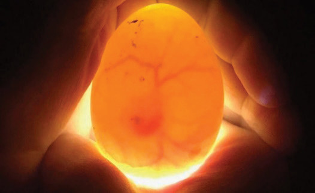

meat, you can use exotic cocks to mate with the local hens. For better egg production, egg production breeds such as White Leghorn and Ancona can be crossed with the indigenous hens. For better meat production, meat breeds, for example, Cornish and New Hampshire can be used. Crossbreds which are the resulting offspring are always better than the original parents in terms of egg production or meat quantity. When new cocks are used, the local cocks should be kept under control.
Incubation of indigenous chickens’ eggs:
Fertilised eggs can be incubated by a broody hen or egg incubators. Chicken eggs take 21 days to hatch into chicks. The eggs used for hatching should be fresh and not more than ten days from when it was hatched. They should be stored in a cool place where the temperature does not exceed 20oC. If the temperature is higher than 20oC, the eggs should not be stored for more than five days before being incubated.
To incubate chicken eggs successfully, it is important to use eggs that are of normal size and shape for the type of chicken involved. The shell of the egg should be undamaged, with no scratches or cracks. If the shell is cracked, the egg might lose moisture which could cause the developing chick to die before it hatches. It could also let in germs which later make the chick unhealthy or even cause it to die before it hatches.
About a week after incubation starts, you need to check whether the eggs are fertile or not. This means to check if eggs have a chick growing inside. You can do this by using a method called candling. Candling is when you hold the egg up to a bright light in a dark room. To see if the egg is fertilised, shine a light on it in a dark room. If the egg is fertilised, you will see a dark spot in the middle with lines like a spider’s web around it. If the egg is not fertilised, you will only see the shadow of the yellow part of the egg called the yolk, and no spider-web lines (refer to Figure 13.1 (a) and (b)).

Candle eggs on the 7th and 18th days. On the 7th day, we look for signs that the egg is fertile, that is, a chick growing inside. On the 18th day, we check if the chick inside